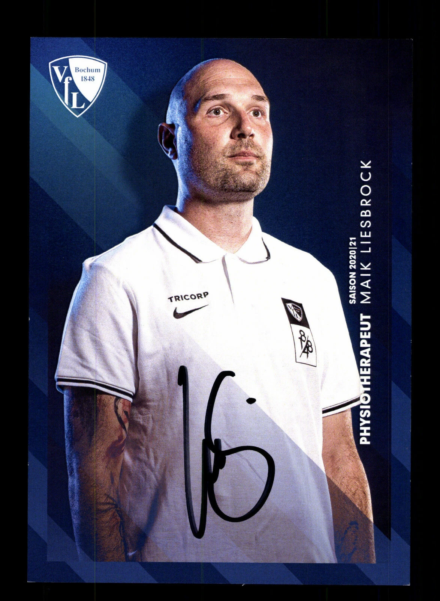

Physiotherapie
Beschwerden behandeln, Beweglichkeit verbessern und Funktionen wiederherstellen.
- Akute und chronische Beschwerden
- Behandlung nach Verletzungen und Operationen
- Funktionelle Bewegungsanalyse
- Individuelle Therapieplanung
01 MLetics by Maik Liesbrock — Bochum
Verstehen. Behandeln. Vernetzen.
Den Körper verstehen. Funktionelle Zusammenhänge erkennen. Individuell behandeln. Und dort, wo weitere Expertise sinnvoll ist, die richtigen Kompetenzen miteinander verbinden.
02 Treat
Auf Basis der Befundung entsteht ein individuelles Behandlungskonzept. Physiotherapie und osteopathische Ansätze werden dabei gezielt miteinander verbunden und an Deine persönliche Situation angepasst.
Beschwerden behandeln, Beweglichkeit verbessern und Funktionen wiederherstellen.
Körperliche Zusammenhänge betrachten und funktionelle Einschränkungen ganzheitlich einordnen.
Eigenständige physiotherapeutische Befundung und Behandlung im Rahmen der bestehenden Erlaubnis.
03 Connect
Ich sehe meine Arbeit als Teil eines größeren Umfelds. Wo sinnvoll, arbeite ich mit Athletiktrainern, Ärzten und weiteren Spezialisten zusammen — nicht um Kompetenzen zu ersetzen, sondern um sie zu verbinden.
Für Athlet:innen
Leistungsfähigkeit braucht einen gesunden, belastbaren Körper. Prävention, individuelle Behandlung und der Blick auf Belastung und Regeneration halten Dich dauerhaft leistungsfähig.
Für Patient:innen
Beschwerden betreffen nicht nur den Körper, sondern das Wohlbefinden. Gemeinsam betrachten wir körperliche und emotionale Faktoren — für mehr Beweglichkeit, Belastbarkeit und Balance.
04 Über Maik
Prävention beginnt vor der Verletzung. 16 Jahre Erfahrung im Profifußball haben meinen Blick auf den menschlichen Körper, Belastung und Regeneration geprägt.
Mein Anspruch ist es, körperliche Zusammenhänge präzise zu erfassen, individuelle Belastungsfaktoren zu erkennen und gemeinsam nachhaltige Lösungen zu entwickeln. Nicht erst reagieren, wenn es weh tut. Sondern verstehen, was Dein Körper braucht.

05 Kontakt